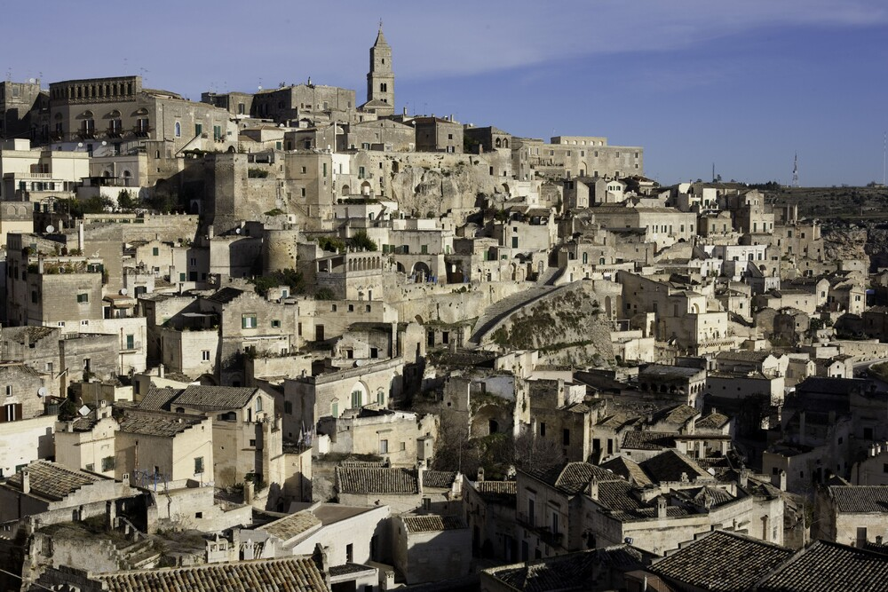
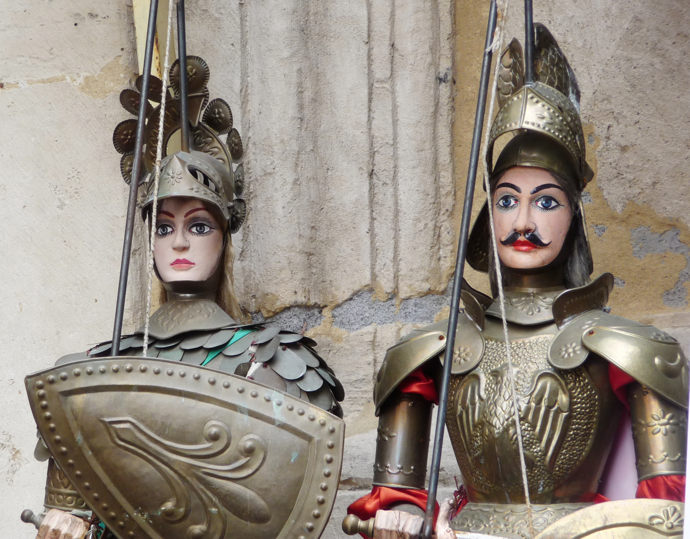
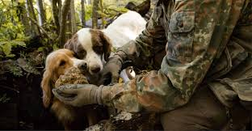
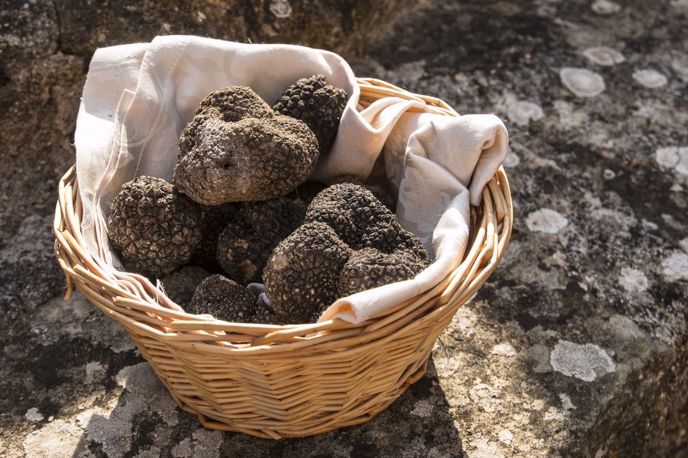

Tangibles
-
The Sassi and the Park of the Rupestrian Churches of Matera
Date of inscription: 1993
Located in the southern Italian region of Basilicata, The Sassi and the Park of the Rupestrian Churches of Matera comprises a complex of houses, churches, monasteries and hermitages built into the natural caves of the Murgia. Covering an area of 1,016 ha this remarkable and intact troglodyte settlement contains more than a thousand dwellings and a large number of shops and workshops. The property was first occupied during the Palaeolithic period and shows evidence of continuous human occupation through several millennia until the present day, and is harmoniously integrated into the natural terrain and ecosystem.
The site is composed of the ancient districts of the city of Matera and of the Park of the Rupestrian Churches which stretch over the Murgia, a calcareous highland plateau characterized by deep fault fissures, ravines, rocks and caves. The morphology of the territory, characterized by deep ravines (gravine) and bare highland plateaus, integrated with ancient cave churches, shepherd tracks marked by wells, and fortified farmhouses, form one of the most evocative landscapes of the Mediterranean.
-
Antigua Naval Dockyard and Related Archaeological Sites
Date of inscription: 2016
The Antigua Naval Dockyard and its Related Archaeological Sites consists of a group of Georgian Naval structures, set within a walled enclosure, on a naturally-occurring series of deep narrow bays surrounded by highlands on which defensive fortifications were constructed. The Dockyard and its related facilities were built at a time when European nations were battling for supremacy of the seas to obtain control over the lucrative sugar-producing islands of the Eastern Caribbean. Antigua’s location as a front-line naval dockyard facility gave the British navy a strategic advantage over its rivals at a crucial point in history.

The construction and operation of the Antigua Naval Dockyard were made possible through the labour and skills of enslaved Africans, whose contribution was crucial for the establishment of the facility and, more widely, for the development of the British Empire, trade and industrialization.
Intangibles
-
Sicilian Pupi

Date of inscription: 2001An ancient and precious art of Sicily, the puppeteers bring puppets to life to tell epic and chivalric stories. These narratives have their roots in medieval literature, including the Carolingian cycle and Arthurian romances. The stories, passed down orally and then published in notes since 1858, combine elements of cultured literature, such as Orlando Innamorato and Orlando Furioso. In addition to the deeds of the Sicilian- Norman sovereigns and historical-novel narratives, the puppeteers also include stories taken from Gerusalemme Liberata, lives of the saints, brigands and Shakespeare's plays, such as Romeo and Juliet and Macbeth. This art form, proclaimed Masterpiece of the oral intangible heritage of humanity, has become a significant part of the historical memory and cultural identity of Sicily, appreciated above all by the popular classes.
-
Truffle hunting

Date of inscription: 2021The National Association of Truffle Cities in Italy has filed a candidacy to have the practice of searching for and hunting truffles recognized as a Unesco Intangible Heritage. The association, along with the Ministry of Culture and Tourism, aims to showcase the cultural significance of the truffle and preserve the traditional values and culture associated with it. Over the past five years, the association has worked to make the truffle a shared asset and a part of the identity of the communities and territories where it is found. The association, which now includes 57 municipalities and unions across Italy's truffle-producing regions, promotes other environmental, cultural, historical, traditional, and enogastronomic resources associated with the truffle.
The practice of truffle hunting is characterized by an insight into the natural environment and the use of specific tools and techniques that have been passed down through generations. Truffle hunting is a traditional practice that has been passed down through generations in rural areas of the country. Truffle hunters use their knowledge and skills to locate and extract the valuable underground fungus known as truffles. The process involves two stages: identifying the areas where truffles grow, with the help of trained dogs, and carefully extracting them without damaging the soil. Finding truffles requires an understanding of climate, environment, and vegetation, as well as the dynamics between the dog and the hunter. This knowledge is often shared through oral tradition, including stories and expressions that reflect the local culture. Truffle hunting is also associated with popular festivals that mark the beginning and end of the truffle season. Throughout this ancient tradition, there is a focus on respecting ecological balance and biodiversity, ensuring the regeneration of various species.